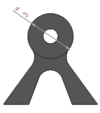

在部件导航器中的后视图节点下方，右击直径尺寸 (1)并选择显示→转换为新的显示实例。
这将使当前视图中的 PMI 变得独一无二，这个命令只适用于显示在特定视图中的 PMI 实例。
在部件导航器中的后视图节点下方，选择直径尺寸 (1)并删除它。
您可以删除单个实例，这是因为您在前一步中已经将 PMI 显示实例设为与视图无关。
在图形窗口中，右击直径尺寸 (1)并选择显示→在所有视图中。
在部件导航器中，后视图节点应该仍然是展开的，右击直径尺寸 (1)并选择显示→在视图中。
在部件导航器中，双击后视图使之成为工作视图。

注意到已删除所有显示实例，除了后视图中的实例。
关闭所有部件。